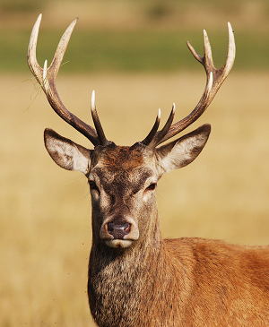
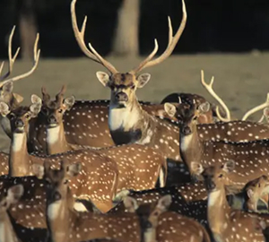

Cervo Vermelho
da família cervidaeO Cervo-Vermelho é um mamífero artiodáctilo ruminante da família Cervidae. É um animal de grande porte, sendo o maior cervídeo depois do alce.
A pelagem do veado-vermelho muda com a estação do ano, variando de castanho-avermelhado no verão a castanho-escuro no inverno. Os filhotes apresentam manchas brancas no dorso que os ajudam a camuflar-se em seu ambiente.
O peso e tamanho dos cervos variam muito em todo o mundo. Os machos chegam a altura no garrote de 1,2 metro e um comprimento de 2,4 metros.
O peso varia geograficamente. Sendo que mais ao norte ops animais tendem a ser maiores, com os machos podendo chegar até os 350kg na Europa Central, mas na Península Ibérica não passam dos 250kg e as fêmeas 150kg.
"Há algo no uivar do lobo que tira um homem do aqui e agora e o transporta para uma floresta da mente."
- Surgiu: 12.000 anos
- Tipo: Mamífero
- Idade Média: 13 anos
- Macho adulto: 80kg
- Fêmea adulta: 55kg
- Família: Lupus
É um sobrivente da Era do Gelo, originário do Pleitoceno Superior, cerca de 300 mil anos atrás.[2] O sequenciamento de DNA e estudos genéticos reafirmam que o lobo cinzento é ancestral do cão doméstico.
É um sobrivente da Era do Gelo, originário do Pleitoceno Superior, cerca de 300 mil anos atrás.[2] O sequenciamento de DNA e estudos genéticos reafirmam que o lobo cinzento é ancestral do cão doméstico.